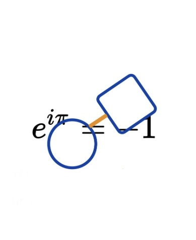
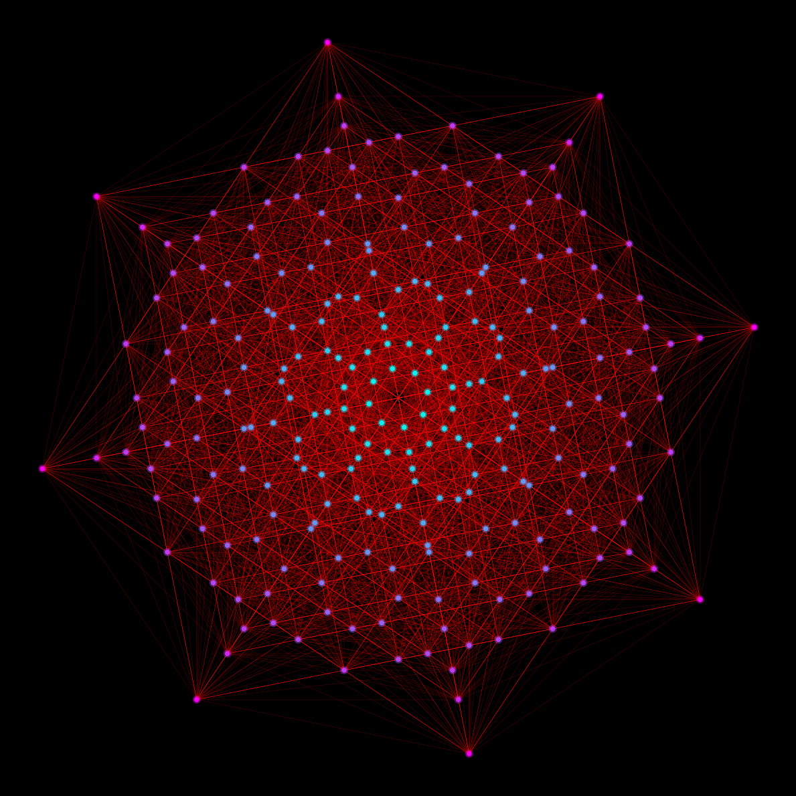
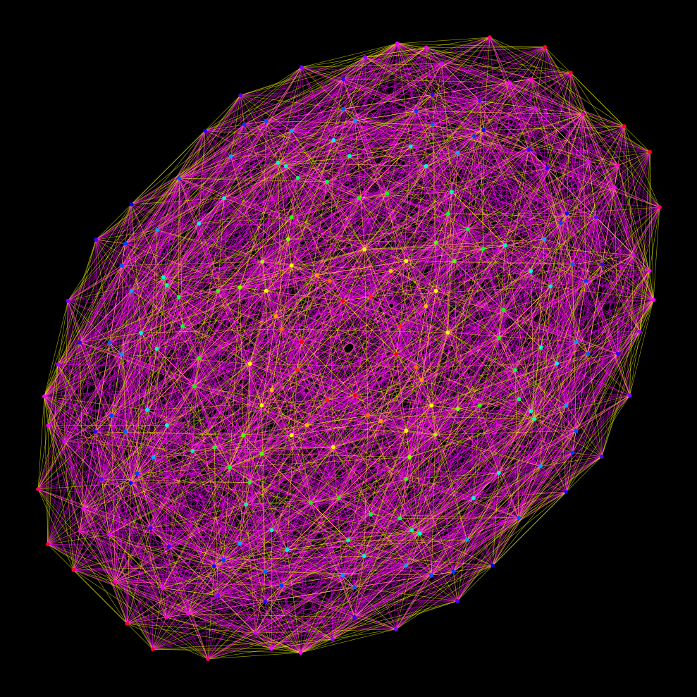
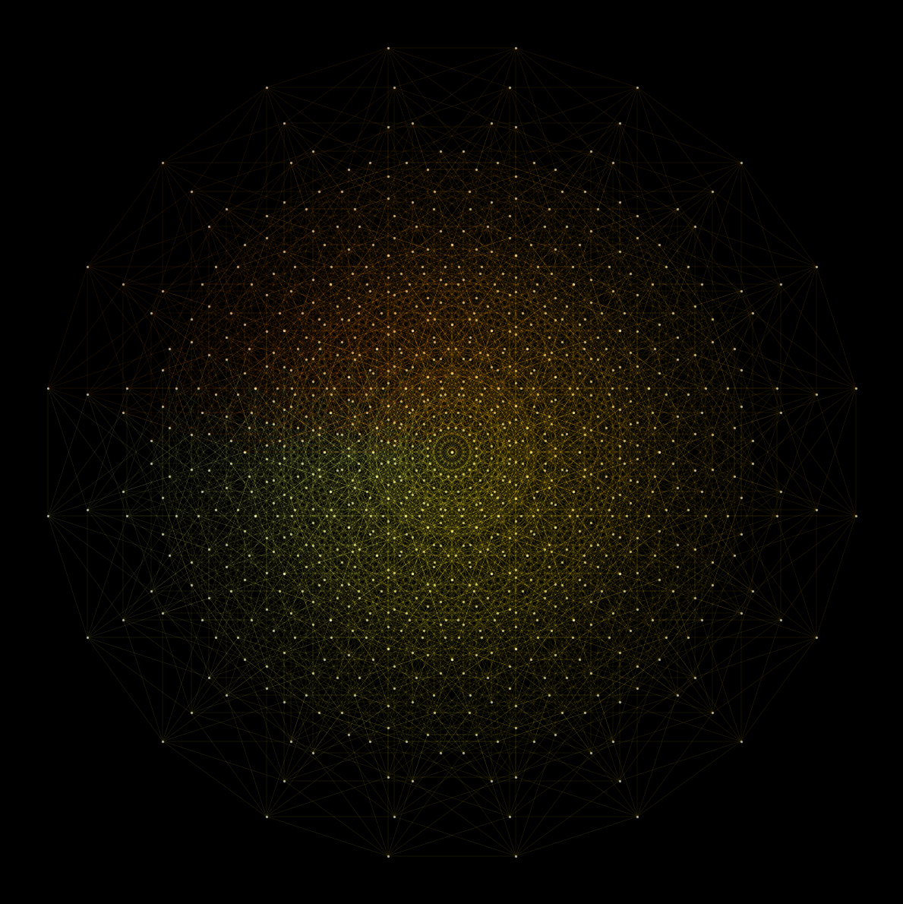
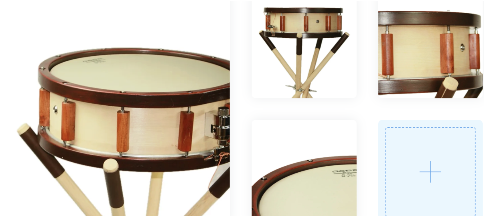
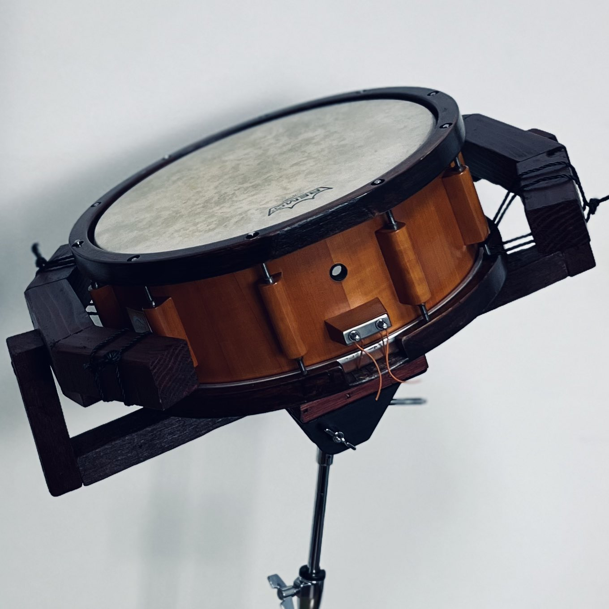
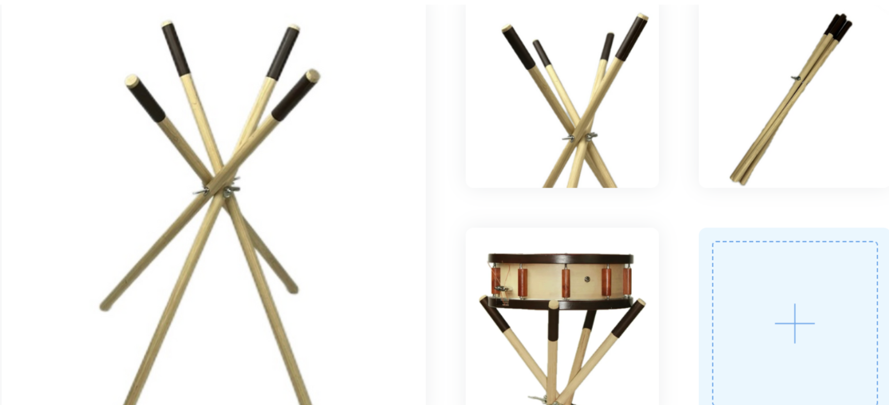

数理と音響，知覚の越境
抽象と物質
論理と芸術，イデアへの憧憬
抽象と物質
論理と芸術，イデアへの憧憬
00
Crossing the boundaries of mathematics, acoustics, and perception.
Abstraction and Matter.
Logic and Art, a longing for the Idea.
Abstraction and Matter.
Logic and Art, a longing for the Idea.

Skills
数学 & 物理学
- 研究基盤: 複素解析、トポロジー、解析的数論（ζ関数）
- 応用モデル: 確率過程（マルコフ連鎖、点過程）、群論、非ユークリッド幾何学
- 物理・音響: 音響物理学、振動・波動論、リズム生成の数理解析
音楽 & 作曲
- 演奏: ピアノ、スネアドラムソロ、パーカッション
- 理論・作曲: 数理的作曲（確率モデル・マルコフ連鎖・クセナキス的手法・音響的多元構造など）、編曲、サウンドデザイン、ポリリズム
- 応用: 楽器設計、音響解析、物理音響モデリング、音響工学
プログラミング & AI
- 使用言語: Python
- 信号処理: デジタル信号処理 (DSP)、FFT、PSD、ウェーブレット変換、ゼロ点分布解析
- AI・機械学習: 深層学習（RNN, VAE, GANs）による作曲モデルの構築
- システム開発: 確率的作曲システム、変拍子生成アルゴリズム、音響データ解析ツールの実装
- Web・ソフトウェア: 研究用Webアプリ開発、再現性・保守性を考慮したコード設計
デザイン & コミュニケーション
- ビジュアル: 油絵、グラフィックデザイン、データのビジュアライゼーション
- 応用: 楽器デザイン、音響インスタレーション
SNS運用 & マーケティング
- Instagram運用: AIデータ分析・戦略により半年でフォロワー1万人増、月間100万リーチ
- クリエイティブ: Davinci Resolve, Premiere Pro, Canvaほか
言語
- ドイツ語、フランス語、英語、日本語、イタリア語、スペイン語
01
Mathematics & Physics
- Research Foundations: Complex Analysis, Topology, Analytic Number Theory (Zeta Function)
- Applied Models: Stochastic Processes (Markov Chains, Point Processes), Group Theory, Non-Euclidean Geometry
- Physics & Acoustics: Acoustical Physics, Vibration & Wave Theory, Mathematical Analysis of Rhythm Generation
Music & Composition
- Performance: Piano, Snare Drum Solo, Percussion
- Theory & Composition: Mathematical Composition (Stochastic Models, Markov Chains, Xenakis-style methods, Acoustic Multi-structures), Arranging, Sound Design, Polyrhythm
- Application: Instrument Design, Acoustic Analysis, Physical Acoustic Modeling, Acoustical Engineering
Programming & AI
- Languages: Python
- Signal Processing: Digital Signal Processing (DSP), FFT, PSD, Wavelet Transform, Zero Distribution Analysis
- AI & ML: Construction of composition models via Deep Learning (RNN, VAE, GANs)
- System Development: Stochastic Composition Systems, Odd Meter Generation Algorithms, Acoustic Data Analysis Tools
- Web & Software: Interactive UI Web Applications for Research, Code Design for Reproducibility & Maintainability
Design & Communication
- Visuals: Oil Painting, Graphic Design, Visualization of Mathematical/Acoustic Data
- Application: Instrument Design, Sound Installation
SNS & Marketing
- Instagram Operation: +10k followers in 6 months via AI data analysis/strategy, 1M monthly reach
- Creative: Davinci Resolve, Premiere Pro, Canva, etc.
Languages
- German, French, English, Japanese, Italian, Spanish
Projects
楽器デザイン
- RYU Percussion: 音響物理学の知見に基づく楽器設計。設計、製作、演奏、ブランディング。
- 主な設計: Snare Drum, Snare Stand, Percussion Stands, Percussion Mallets…
研究論文 & 執筆
-
研究論文: リーマンゼータ零点の多角的ソニフィケーション：相補的音響表現による数論的構造の知覚的解析 (2025)
概要: ゼータ関数の零点を、ソニフィケーションし、その知覚的有効性を評価する試み。 -
研究論文: スネアドラムの構成要素がその音響特性に与える物理的影響の定量的評価 (2025)
概要: スネアドラムの主要要素がそのティンバーに与える影響を定量化。楽器設計理論の基盤。
開発
-
System: Mathematical Composition System (2024)
確率過程（マルコフ連鎖等）及び統計的手法を用いたリズム・音響生成システム。Pythonにて実装。 -
Tool: 音響信号処理の自動可視化ツール (内部ツール)
FFT、PSD、ウェーブレット変換など、音響データ解析の結果をバッチ処理で自動可視化。研究・開発効率の向上に貢献。
音楽活動、作品
- Snare Solo / Snare × Piano (Instagram): 自作スネアドラム（RYU Percussion）のソロ演奏および、スネアとピアノの演奏。
- Solo Works: スネアドラムソロやスネアコンチェルトなど。数理的手法に基づく作曲。
教育
- 数学、音楽、芸術、プログラミングなどさまざまな分野を横断する、統合的教育モデルを構想。
- STEM教育とギフテッド教育を融合させた多様で創造的な教育像を提案。
02
Instrument Design
- RYU Percussion: Instrument design based on acoustical physics insights. Design, fabrication, performance, branding.
- Main Designs: Snare Drum, Snare Stand, Percussion Stands, Percussion Mallets…
Publications & Writing
-
Research Paper: Multilateral Sonification of Riemann Zeta Zeros (2025)
Perceptual Analysis of Number Theoretic Structures via Complementary Acoustic Representations. -
Research Paper: Quantitative Evaluation of Physical Impacts of Constituent Components on Snare Drum Acoustics (2025)
Quantifying the impact of snare elements on timbre. Foundation of instrument design theory.
Software & Systems
-
System: Mathematical Composition System (2024)
Rhythm/Sound generation system using stochastic processes (Markov chains, etc.) and statistical methods. -
Tool: Automated Acoustic Signal Processing Visualization Tool
Batch processing tool for automated visualization of acoustic data analysis (FFT, PSD, Wavelet, etc.).
Art Works & Performances
- Snare Solo / Snare × Piano: Solo performance with self-made snare (RYU Percussion) and Snare/Piano duos.
- Solo Works: Snare solos, snare concertos. Composition based on mathematical methods.
Education
- Conceiving an integrated educational model crossing Mathematics, Music, Art, Programming, and various fields.
- Proposing a diverse and creative vision of education fusing STEM and Gifted education.
Core Research Themes
解析的数論のソニフィケーション
- リーマンゼータ関数の零点分布や素数分布といった数論的構造と、音響パラメータ（周波数、リズム、音色）との構造的対応を研究。
- ソニフィケーションによって、数理的概念と聴覚的情報を対応させ、数理構造の知覚に新たなアプローチを見出す。
アルゴリズミック作曲と数理モデル
- クセナキス（Iannis Xenakis）の確率論的手法（Stochastic Music）、マルコフ連鎖、群論、非ユークリッド幾何学などの数理モデルを用いた作曲アルゴリズムを構築。
- ポリリズムとその知覚構造の対応。
音響物理学と楽器設計への応用
- スネアドラム等の打楽器が発する音響の物理的特性（振動モード、減衰率、周波数特性）を、実験とシミュレーション（物理音響モデリング）によって定量的・数理的に評価。
- この知見を楽器設計に直接フィードバックし、音響特性を意図的にデザイン。
03
Sonification of Analytic Number Theory
- Researching the structural correspondence between number theoretic structures (such as Riemann Zeta zero distribution) and acoustic parameters.
- Finding new approaches to perceive mathematical structures by mapping mathematical concepts to auditory information via sonification.
Algorithmic Composition & Mathematical Models
- Constructing composition algorithms using mathematical models such as Iannis Xenakis's Stochastic Music, Markov Chains, Group Theory, and Non-Euclidean Geometry.
- Correspondence between polyrhythms and perceptual structures.
Acoustical Physics & Application to Instrument Design
- Quantitative evaluation of acoustic physical characteristics of percussion instruments via experiments and simulation (physical acoustic modeling).
- Directly feeding this knowledge back into instrument design to intentionally design acoustic characteristics.
About
2007年生まれ.
幼少期より数学及び音楽（ピアノ、打楽器、作編曲）に強い興味を抱き、現在は両者の関係性に着目し、数的アルゴリズムによる作曲や、数学への聴覚的アプローチの導入など、両者を統合したインタラクティブな表現方法を追求。
また、自身の研究知見を楽器設計に応用し、デザイン、ブランディング、演奏までを一貫して行う。(イタリア国際打楽器コンクール最高位ほか)
そして、自身の経験から日本におけるギフテッド教育およびSTEAM教育にも注目し、学問や芸術の枠にとらわれない多様で創造的な教育像を模索。
関心領域は、物理学、トポロジー、楽器デザイン、AI、プログラミングから、油絵、デザイン、俳句、ルービックキューブなど。
学問・芸術・ものづくりの境界を越え、数理的思考と感性の調和から、新たな価値と表現のかたちの創造することが興味の中心。
幼少期より数学及び音楽（ピアノ、打楽器、作編曲）に強い興味を抱き、現在は両者の関係性に着目し、数的アルゴリズムによる作曲や、数学への聴覚的アプローチの導入など、両者を統合したインタラクティブな表現方法を追求。
また、自身の研究知見を楽器設計に応用し、デザイン、ブランディング、演奏までを一貫して行う。(イタリア国際打楽器コンクール最高位ほか)
そして、自身の経験から日本におけるギフテッド教育およびSTEAM教育にも注目し、学問や芸術の枠にとらわれない多様で創造的な教育像を模索。
関心領域は、物理学、トポロジー、楽器デザイン、AI、プログラミングから、油絵、デザイン、俳句、ルービックキューブなど。
学問・芸術・ものづくりの境界を越え、数理的思考と感性の調和から、新たな価値と表現のかたちの創造することが興味の中心。
01
Born in 2007.
From an early age, I developed a profound interest in both Mathematics and Music. Currently, I focus on the interrelation between these two fields, pursuing new expressive methods through the integration of stochastic/statistical composition via numerical algorithms, and the introduction of auditory approaches to mathematical concepts.
Drawing from my personal background, I am also deeply engaged in developing diverse and creative educational models for Gifted and STEAM Education in Japan, transcending traditional academic and artistic boundaries.
My interests span a wide range, including Physics, Topology, AI, Programming, Oil Painting, Design, Haiku, Rubik's Cube, and Instrument Design.
I continuously strive to create new value and forms of expression by harmonizing mathematical rigor with artistic sensibility.
From an early age, I developed a profound interest in both Mathematics and Music. Currently, I focus on the interrelation between these two fields, pursuing new expressive methods through the integration of stochastic/statistical composition via numerical algorithms, and the introduction of auditory approaches to mathematical concepts.
Drawing from my personal background, I am also deeply engaged in developing diverse and creative educational models for Gifted and STEAM Education in Japan, transcending traditional academic and artistic boundaries.
My interests span a wide range, including Physics, Topology, AI, Programming, Oil Painting, Design, Haiku, Rubik's Cube, and Instrument Design.
I continuously strive to create new value and forms of expression by harmonizing mathematical rigor with artistic sensibility.
Career
2025年 RYU Percussion 代表・プロデューサー
2026年 steAm Inc. (カリキュラム開発、広報全般等)
2025年 RYU Percussion 代表・プロデューサー
2026年 steAm Inc. (カリキュラム開発、広報全般等)
02
Career
2025: RYU Percussion Founder & Producer
2026: steAm Inc. (Curriculum Development, PR)
2025: RYU Percussion Founder & Producer
2026: steAm Inc. (Curriculum Development, PR)
Academics
主に、数理構造と音響・知覚との対応関係を主題として、解析的数論、確率モデル、音響物理学を基盤に、抽象的数学構造を聴覚的・物理的現象へと写像する理論と実装を研究しています。
主な関心領域：
・関数およびその解の分布のソニフィケーション
・確率過程・群論に基づくアルゴリズミック作曲
・理論的合理性に基づく楽器設計
理論構築から数値実装、実験的検証、応用設計までを一貫して行い、数理的思考と感性の接点における新たな研究方法論の確立を目指しています。
主な関心領域：
・関数およびその解の分布のソニフィケーション
・確率過程・群論に基づくアルゴリズミック作曲
・理論的合理性に基づく楽器設計
理論構築から数値実装、実験的検証、応用設計までを一貫して行い、数理的思考と感性の接点における新たな研究方法論の確立を目指しています。
01
Focusing primarily on the correspondence between mathematical structures and acoustic perception, I research theories and implementations that map abstract mathematical structures onto auditory and physical phenomena, grounded in analytic number theory, stochastic models, and acoustical physics.
Core interests:
- Sonification of functions and their root distributions.
- Algorithmic composition based on stochastic processes and group theory.
- Instrument design based on theoretical rationality.
By seamlessly integrating theoretical construction, numerical implementation, experimental verification, and applied design, I aim to establish new research methodologies at the intersection of mathematical thought and artistic sensibility.
Core interests:
- Sonification of functions and their root distributions.
- Algorithmic composition based on stochastic processes and group theory.
- Instrument design based on theoretical rationality.
By seamlessly integrating theoretical construction, numerical implementation, experimental verification, and applied design, I aim to establish new research methodologies at the intersection of mathematical thought and artistic sensibility.
1. Statistical Sonification of Spectral Rigidity in the Riemann Zeta Zeros
― A Psychoacoustically Grounded Framework for Real-Time Structural Monitoring ―
[📄 PDF]
リーマンゼータ関数の非自明零点の統計的性質は、GUE (Gaussian Unitary Ensemble) の固有値統計と一致することが知られている。この対応の本質は、数列が示すスペクトル剛性（spectral rigidity）にある。
GUEでは数分散 $\Sigma^2(L)$ が対数的抑制を示す一方、ポアソン過程では線形成長を示す。
零点列 $\{\gamma_n\}$ → 正規化間隔列 $\{s_n\}$ → 連続制御信号 $S(t)$ → FM合成音響信号 $y(t)$ → スペクトルエントロピー $H(t)$ の階層的写像を通じ、GUE状態（$\langle s \rangle \approx 1$）での倍音整列と、剛性崩壊時（$S \neq 1$）の臨界帯域内干渉を評価。混合モデル $s_{mix} = (1-\alpha)s_{GUE} + \alpha s_{Poi}$ において検出閾値 $\alpha \approx 0.4$ を確認した。
― A Psychoacoustically Grounded Framework for Real-Time Structural Monitoring ―
[📄 PDF]
リーマンゼータ関数の非自明零点の統計的性質は、GUE (Gaussian Unitary Ensemble) の固有値統計と一致することが知られている。この対応の本質は、数列が示すスペクトル剛性（spectral rigidity）にある。
GUEでは数分散 $\Sigma^2(L)$ が対数的抑制を示す一方、ポアソン過程では線形成長を示す。
零点列 $\{\gamma_n\}$ → 正規化間隔列 $\{s_n\}$ → 連続制御信号 $S(t)$ → FM合成音響信号 $y(t)$ → スペクトルエントロピー $H(t)$ の階層的写像を通じ、GUE状態（$\langle s \rangle \approx 1$）での倍音整列と、剛性崩壊時（$S \neq 1$）の臨界帯域内干渉を評価。混合モデル $s_{mix} = (1-\alpha)s_{GUE} + \alpha s_{Poi}$ において検出閾値 $\alpha \approx 0.4$ を確認した。
02
1. Statistical Sonification of Spectral Rigidity in the Riemann Zeta Zeros
[📄 PDF]
The statistical properties of the non-trivial zeros of the Riemann zeta function are known to align with the eigenvalue statistics of the Gaussian Unitary Ensemble (GUE). The essence of this correspondence lies in the spectral rigidity exhibited by the sequence.
While the number variance $\Sigma^2(L)$ shows logarithmic suppression in GUE, it grows linearly in a Poisson process. Through a hierarchical mapping of the zero sequence $\{\gamma_n\}$ to spectral entropy $H(t)$, this study evaluates harmonic alignment in the GUE state ($\langle s \rangle \approx 1$) and critical band interference during rigidity breakdown ($S \neq 1$).
[📄 PDF]
The statistical properties of the non-trivial zeros of the Riemann zeta function are known to align with the eigenvalue statistics of the Gaussian Unitary Ensemble (GUE). The essence of this correspondence lies in the spectral rigidity exhibited by the sequence.
While the number variance $\Sigma^2(L)$ shows logarithmic suppression in GUE, it grows linearly in a Poisson process. Through a hierarchical mapping of the zero sequence $\{\gamma_n\}$ to spectral entropy $H(t)$, this study evaluates harmonic alignment in the GUE state ($\langle s \rangle \approx 1$) and critical band interference during rigidity breakdown ($S \neq 1$).
2. Quantitative Analysis of Constituent Component Effects on Snare Drum Acoustics
[📄 PDF]
スネアドラム音響特性を、構成要素（ワイヤー・スティック・スタンド）の多因子相互作用として統計的に分解する。三元配置完全要因実験に基づくThree-way ANOVA（$\eta^2$算出）、PCA、交差検証 $R^2 = 0.686 \pm 0.010$ を実施。
ワイヤー効果が最大寄与（$\eta^2 = 0.22$）を示し、懸架型スタンドがディケイ時間を有意に延長することなどを定量化。経験則中心であった楽器設計領域を効果量ベースの定量モデルへ拡張した。
[📄 PDF]
スネアドラム音響特性を、構成要素（ワイヤー・スティック・スタンド）の多因子相互作用として統計的に分解する。三元配置完全要因実験に基づくThree-way ANOVA（$\eta^2$算出）、PCA、交差検証 $R^2 = 0.686 \pm 0.010$ を実施。
ワイヤー効果が最大寄与（$\eta^2 = 0.22$）を示し、懸架型スタンドがディケイ時間を有意に延長することなどを定量化。経験則中心であった楽器設計領域を効果量ベースの定量モデルへ拡張した。
03
2. Quantitative Analysis of Constituent Component Effects on Snare Drum Acoustics
[📄 PDF]
This study statistically decomposes the acoustic characteristics of snare drums as multifactorial interactions of components (wires, sticks, stands). Using Three-way ANOVA ($\eta^2$), PCA, and cross-validation ($R^2 = 0.686 \pm 0.010$), we quantified that wire effects have the maximum contribution ($\eta^2 = 0.22$) and suspension stands significantly extend decay time. This extends instrument design from empirical rules to an effect-size-based quantitative model.
[📄 PDF]
This study statistically decomposes the acoustic characteristics of snare drums as multifactorial interactions of components (wires, sticks, stands). Using Three-way ANOVA ($\eta^2$), PCA, and cross-validation ($R^2 = 0.686 \pm 0.010$), we quantified that wire effects have the maximum contribution ($\eta^2 = 0.22$) and suspension stands significantly extend decay time. This extends instrument design from empirical rules to an effect-size-based quantitative model.
Art

1. $E_8$ルート系：コクセター平面への射影例外型単純リー環 $E_8$ のルート系（240個のベクトル）を、8次元ユークリッド空間からコクセター平面へ線形射影した幾何学的可視化。$E_8$ のルート系は $\mathbb{R}^8$ において対称性を持ち、コクセター元 $w$ の固有平面（固有値 $\exp(2\pi i/h)$）への射影により、8次元の対称性が2次元平面上の30回回転対称性として現れる。
01
1. $E_8$ Root System: Projection onto the Coxeter Plane
A geometric visualization of the root system of the exceptional simple Lie algebra $E_8$ (240 vectors) linearly projected from 8-dimensional Euclidean space onto the Coxeter plane. The root system of $E_8$ in $\mathbb{R}^8$ is governed by highly complex symmetries. By projecting onto the eigenspace of the Coxeter element $w$ (eigenvalue $\exp(2\pi i/h)$), the 8D symmetry emerges as a 30-fold rotational symmetry in 2D space.
A geometric visualization of the root system of the exceptional simple Lie algebra $E_8$ (240 vectors) linearly projected from 8-dimensional Euclidean space onto the Coxeter plane. The root system of $E_8$ in $\mathbb{R}^8$ is governed by highly complex symmetries. By projecting onto the eigenspace of the Coxeter element $w$ (eigenvalue $\exp(2\pi i/h)$), the 8D symmetry emerges as a 30-fold rotational symmetry in 2D space.

2. 600胞体：4次元正多胞体と $H_4$ 対称性4次元空間における正多胞体「600胞体」の、黄金比に基づく構造保存射影。その対称群は非結晶学的コクセター群 $H_4$ であり、構造には黄金比 $\phi = (1+\sqrt{5})/2$ が組み込まれている。各頂点は隣接頂点と黄金比の距離で結ばれ、自己相似的な五次対称性を有するマンダラ状のパターンを創発する。
02
2. The 600-Cell: Four-Dimensional Regular Polytope and $H_4$ Symmetry
A structure-preserving projection of the 4D regular polytope "600-Cell," based on the golden ratio. Its symmetry group is the non-crystallographic Coxeter group $H_4$, inherently incorporating the golden ratio $\phi = (1+\sqrt{5})/2$. The projection generates a mandala-like pattern with self-similar 5-fold symmetry, visually expressing the topological constraints imposed by high-dimensional geometry.
A structure-preserving projection of the 4D regular polytope "600-Cell," based on the golden ratio. Its symmetry group is the non-crystallographic Coxeter group $H_4$, inherently incorporating the golden ratio $\phi = (1+\sqrt{5})/2$. The projection generates a mandala-like pattern with self-similar 5-fold symmetry, visually expressing the topological constraints imposed by high-dimensional geometry.

3. 10次元超立方体：高次元正射影とペトリー多角形10次元単位超立方体の全1024頂点と5120本のエッジによる正射影。10次元空間の基底を $\mathbb{R}^2$ 上の20角形の頂点へとマッピングすることで対称性を実現。中心部のモアレは、高次元情報の圧縮プロセスにおける情報の保存と干渉を幾何学的に記述したものである。
03
3. 10D Hypercube: High-Dimensional Orthographic Projection and Petrie Polygons
An orthographic projection of the 10-dimensional unit hypercube (1024 vertices, 5120 edges). By mapping the basis of the 10D space to the vertices of a 20-sided polygon in $\mathbb{R}^2$, maximum symmetry is achieved. The complex moiré patterns at the center geometrically describe information preservation and interference in the compression of high-dimensional data.
An orthographic projection of the 10-dimensional unit hypercube (1024 vertices, 5120 edges). By mapping the basis of the 10D space to the vertices of a 20-sided polygon in $\mathbb{R}^2$, maximum symmetry is achieved. The complex moiré patterns at the center geometrically describe information preservation and interference in the compression of high-dimensional data.
Music
Philosophy
数学的知性と芸術的感性の統合。 数理アルゴリズムによる作曲、音響物理学に基づく楽器設計、そして演奏。 学問と芸術の境界を越え、数理的思考から新たな表現の形を創造する。
数学的知性と芸術的感性の統合。 数理アルゴリズムによる作曲、音響物理学に基づく楽器設計、そして演奏。 学問と芸術の境界を越え、数理的思考から新たな表現の形を創造する。
01
Philosophy
The integration of mathematical intellect and artistic sensibility. Algorithmic composition, acoustically engineered instrument design, and performance. Transcending boundaries to create new forms of expression.
The integration of mathematical intellect and artistic sensibility. Algorithmic composition, acoustically engineered instrument design, and performance. Transcending boundaries to create new forms of expression.
Video Archive
Snare Solo 01
Snare Solo 02
Snare Solo 03
Marimba 01
Piano/Snare 01
Piano/Snare 02
Instruments

The Full-Wooden Snare100% Wood. 100% Handmade. 音響物理学への深い洞察に基づき、シェルからラグ、フープに至るすべてのパーツを木材で設計。金属パーツによる干渉を排除し、有機的で純粋な響きを追求した一台。
01
The Full-Wooden Snare
100% Wood. 100% Handmade. Based on deep insights into acoustical physics, every component—from the shell and lugs to the hoops—is designed in wood. Eliminating metallic interference, this snare pursues an organic and pure resonance.
100% Wood. 100% Handmade. Based on deep insights into acoustical physics, every component—from the shell and lugs to the hoops—is designed in wood. Eliminating metallic interference, this snare pursues an organic and pure resonance.

Snare Stand I: Suspension ModelInspired by Vintage Military Snares. クランプによる締め付けを排除し、紐で「吊るす」構造を採用。シェルの振動を一切殺さない、極めてオープンで自由なサウンドを実現。
02
Snare Stand I: Suspension Model
Inspired by Vintage Military Snares. Eliminating clamp pressure, this model utilizes a suspended string structure. It allows the shell to vibrate completely freely, producing an extremely open sound.
Inspired by Vintage Military Snares. Eliminating clamp pressure, this model utilizes a suspended string structure. It allows the shell to vibrate completely freely, producing an extremely open sound.

Snare Stand II: Quadrilateral ModelStability and Portability. 木製4本構造による、圧倒的な安定感と軽量化の両立。
„Die kleine Trommel soll frei klingen, und nicht nur geschlagen werden.“ (Richard Hochrainer)
— 小太鼓は単に打たれるものではなく、自由に響くべきである。
03
Snare Stand II: Quadrilateral Model
Stability and Portability. A 4-pillar wooden structure achieving both overwhelming stability and light weight.
The snare drum should ring freely, not just be struck.
A physical approach to liberate resonance from fixation.
Stability and Portability. A 4-pillar wooden structure achieving both overwhelming stability and light weight.
The snare drum should ring freely, not just be struck.
A physical approach to liberate resonance from fixation.
Public Archive
Scores for Evolution
自身の研究プロセスから生まれた数理的作曲、および打楽器・ピアノのための編曲作品の一部を、無償で公開しています。演奏、研究、あるいは新たな創作の起点として。
[📄 Download Scores PDF]
自身の研究プロセスから生まれた数理的作曲、および打楽器・ピアノのための編曲作品の一部を、無償で公開しています。演奏、研究、あるいは新たな創作の起点として。
[📄 Download Scores PDF]
01
Scores for Evolution
A selection of mathematical compositions and arrangements born from my research process, made available to the public. Serving as a starting point for performance, research, or new creation.
A selection of mathematical compositions and arrangements born from my research process, made available to the public. Serving as a starting point for performance, research, or new creation.
Contact
01
For research inquiries, academic collaboration, or performance opportunities, please feel free to reach out via the links provided.